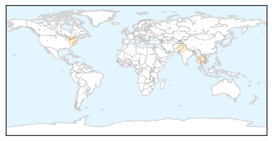
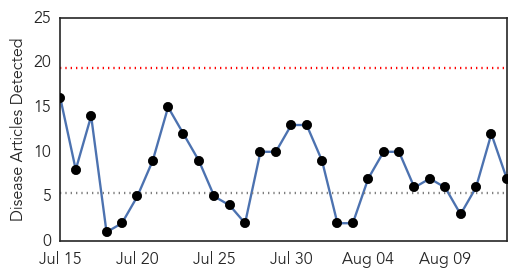

Hepatitis
30-Day Web Trend
4 alerts, 7 warnings
30-Day Twitter Trend
1 alerts, 0 warnings

Article Locations
Article Confidences
Top Articles:
Top Tweets:
-
No tweets found for Aug 13, 2015
West Nile Virus
30-Day Web Trend
0 alerts, 0 warnings

30-Day Twitter Trend
0 alerts, 0 warnings

Article Locations

Article Confidences

Top Articles:
- 0.997
- Georgia Confirms First Case Of West Nile Virus
- 0.997
- West Nile Death Reported in Benton County
- 0.985
- Additional West Nile postive traps reported
- 0.937
- West Nile puts 2 in Toledo in hospital
- 0.883
- Mosquitoes in Elgin Township test positive for West Nile virus
- 0.875
- Lloydminster Meridian Booster
- 0.518
- West Nile found in Oakland County mosquito trap
Top Tweets:
-
No tweets found for Aug 13, 2015